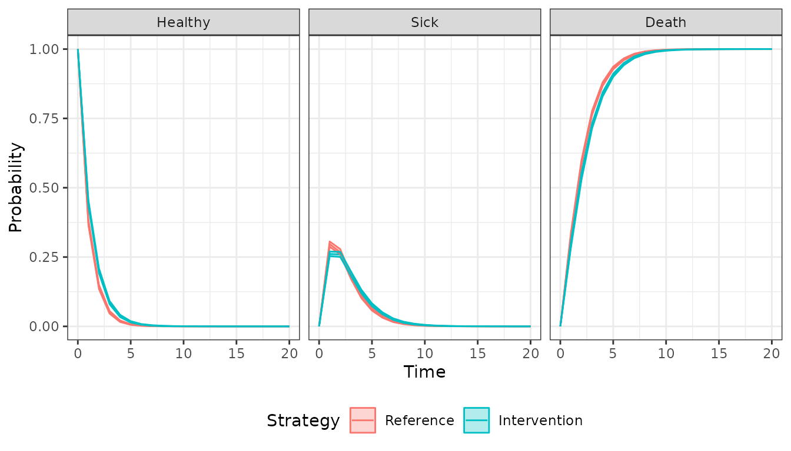
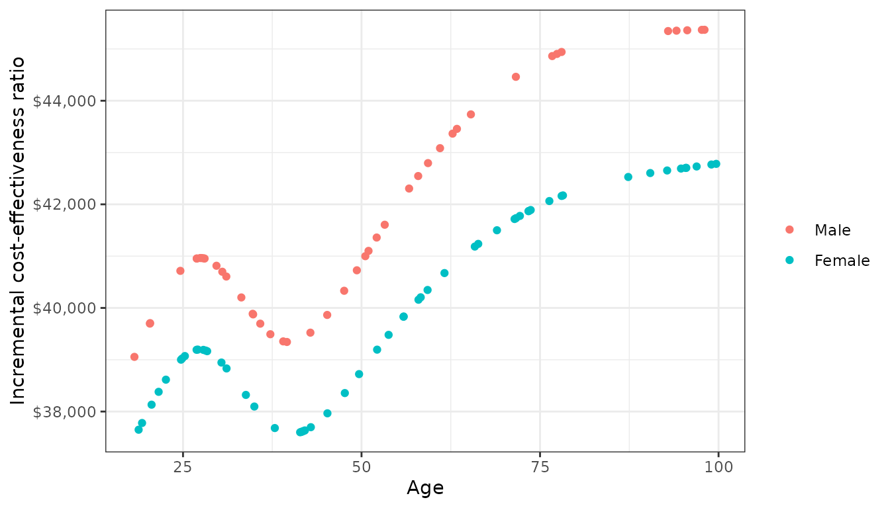

vignettes/mlogit.Rmd
mlogit.RmdWhen discrete time data is collected at evenly spaced intervals, cohort discrete time state transition models (cDTSTMs)—often referred to as Markov cohort models—can be parameterized using multinomial logistic regression. Separate multinomial logit model are estimated for each health state and predict the probability of transitioning from that state to all other states. Mathematically, the probability of a transition from state \(r\) at model cycle \(t\) to state \(s\) at model cycle \(t+1\) is given by,
\[ Pr(y_{t+1} = s| y_t = r) = \frac{e^{x_r\beta_{rs}}}{\sum_{h=1}^{H}e^{x_r\beta_{rh}}} \]
We illustrate by considering an illness-death model with 3 generic health states: (1) Healthy, (2) Sick, and (3) Death We will assume that patients can only transition to a more severe health state:
The transitions of this model can be characterized with a transition
matrix with the number of rows and columns equal to the number of health
states. In the multinomial logistic regression case, the reference
category in each multinomial logit fit is assigned a value of zero.
Elements representing transitions that are not possible are
NA. All other transitions are represented with integer
values from 1 to \(K_r -1\) where \(K_r\) is the number of states in the
multinomial logit model for state \(r\).
tmat <- rbind(c(0, 1, 2),
c(NA, 0, 1),
c(NA, NA, NA))
colnames(tmat) <- rownames(tmat) <- c("Healthy", "Sick", "Death")
print(tmat)## Healthy Sick Death
## Healthy 0 1 2
## Sick NA 0 1
## Death NA NA NAThe cost-effectiveness analysis will compare two treatment
strategies—the “Intervention” and the “Reference” treatment. Separate
multinomial logistic regressions are fit for patients starting in the
healthy state and the sick state using the multinom3_exdata
example dataset, which tracks patient health states at yearly time
intervals in a longitudinal fashion.
library("hesim")
library("data.table")
transitions_data <- data.table(multinom3_exdata$transitions)
head(transitions_data)## patient_id strategy_id strategy_name age age_cat female year
## 1: 1 1 Reference 37.68882 Age < 40 0 1
## 2: 2 1 Reference 20.17811 Age < 40 0 1
## 3: 3 1 Reference 62.81725 Age >= 60 0 1
## 4: 4 2 Intervention 58.12408 40 <= Age < 60 0 1
## 5: 5 2 Intervention 30.72299 Age < 40 1 1
## 6: 6 1 Reference 33.49259 Age < 40 0 1
## state_from state_to year_cat
## 1: Healthy Sick Year < 3
## 2: Healthy Healthy Year < 3
## 3: Healthy Healthy Year < 3
## 4: Healthy Dead Year < 3
## 5: Healthy Sick Year < 3
## 6: Healthy Healthy Year < 3In a typical Markov cohort model, either a single cohort or a small
number of cohorts is simulated. However, one advantage of using an
explicit statistical model to predict transition probabilities is that a
large heterogeneous cohort of patients can be easily simulated. Here, we
will simulate 100 representative patients (i.e., cohorts), which
arguably better captures the underlying heterogeneity in the population.
To do so, we will randomly sample 100 patients from the
multinom3_exdata dataset. In our data, we observe
differences in age and gender.
n_patients <- 100
patients <- transitions_data[year == 1, .(patient_id, age, female)][
sample.int(nrow(transitions_data[year == 1]), n_patients)][
, grp_id := 1:n_patients]
head(patients)## patient_id age female grp_id
## 1: 1647 44.19496 1 1
## 2: 125 31.30913 0 2
## 3: 874 87.94577 1 3
## 4: 4757 31.83042 0 4
## 5: 4785 22.28871 0 5
## 6: 6043 27.19347 0 6To perform the cost-effectiveness analysis, each patient is simulated twice, once with the reference treatment and once with the intervention. The non-death states use for simulating costs and quality-adjusted life-years (QALYs) are the healthy and sick states.
hesim_dat <- hesim_data(
patients = patients,
strategies = data.table(strategy_id = 1:2,
strategy_name = c("Reference", "Intervention")),
states = data.table(state_id = c(1, 2),
state_name = rownames(tmat)[1:2]) # Non-death health states
)We can use get_labels() to create nice labels for the
plots and summary tables.
labs <- get_labels(hesim_dat)
print(labs)## $strategy_id
## Reference Intervention
## 1 2
##
## $state_id
## Healthy Sick Death
## 1 2 3hesim can simulate cDTSTMs with transition probabilities
fit via multinomial logistic regression with the nnet
package. The probability of a health state transition is modeled as a
function of the treatment strategy, patient age, and gender. The
nonlinear impact of age is modeled using a natural spline with
splines::ns(). In addition, time period indicator variables
(year_cat) are included so that transition probabilities
can change over time, which makes the Markov model time
inhomogeneous.
library("nnet")
library("splines")
# Transitions from healthy state
data_healthy <- transitions_data[state_from == "Healthy"]
fit_healthy <- multinom(state_to ~ strategy_name + female +
ns(age, df = 5) + year_cat,
data = data_healthy, trace = FALSE)
# Transitions from sick state
data_sick <- droplevels(transitions_data[state_from == "Sick"])
fit_sick <- multinom(state_to ~ strategy_name + female +
ns(age, df = 5) + year_cat,
data = data_sick, trace = FALSE)The separate fits are stored in a list to facilitate prediction of the transition probability matrix.
transfits <- multinom_list(healthy = fit_healthy, sick = fit_sick)As in the simple Markov cohort and
time inhomogeneous Markov
cohort modeling vignettes, utility and costs models could be
generated using mathematical expressions with
define_model(). However, in this case it is simpler and
more direct (and thus more computationally efficient) to use the
stateval_tbl() functionality. Separate tables are created
for utility, drug costs, and medical costs.
utility_tbl <- stateval_tbl(multinom3_exdata$utility,
dist = "beta")
head(utility_tbl)## state_id state_name mean se
## 1: 1 Healthy 0.90 0.1732051
## 2: 2 Sick 0.65 0.2000000
drugcost_tbl <- stateval_tbl(multinom3_exdata$costs$drugs,
dist = "fixed")
medcost_tbl <- stateval_tbl(multinom3_exdata$costs$medical,
dist = "gamma")The economic model consists of a model for disease progression and models for assigning utility and cost values to health states. Since we are performing a PSA, we must specify the number of times to sample the parameters.
n_samples <- 100The disease model can be easily constructed from our fitted multinomial logistic regression models and input data. The input data has one observation for each treatment strategy and patient. In addition, since we included time period dummies, we separate the covariates into distinct time intervals in order to make the model time inhomogeneous.
tintervals <- time_intervals(unique(transitions_data[, .(year_cat)])
[, time_start := c(0, 2, 6)])
transmod_data <- expand(hesim_dat, times = tintervals)
transmod <- create_CohortDtstmTrans(transfits,
input_data = transmod_data,
trans_mat = tmat,
n = n_samples,
uncertainty = "normal")The utility and cost models can be created directly from the utility
and cost tables since they do not include covariates. That is, unlike
the disease model which explicitly models the transition probabilities
as a function of covariates, they are based solely on predicted means
(see tparams_mean()) and therefore do not require input
data.
# Utility
utilitymod <- create_StateVals(utility_tbl, n = n_samples, hesim_data = hesim_dat)
# Costs
drugcostmod <- create_StateVals(drugcost_tbl, n = n_samples, hesim_data = hesim_dat)
medcostmod <- create_StateVals(medcost_tbl, n = n_samples, hesim_data = hesim_dat)
costmods <- list(Drug = drugcostmod,
Medical = medcostmod)The transition, utility, and cost models are combined to create the cDTSTM.
econmod <- CohortDtstm$new(trans_model = transmod,
utility_model = utilitymod,
cost_models = costmods)We simulate state probabilities over 20 years with 1-year model
cycles. autoplot.stateprobs() is used to plot the
probability of being in each of the 3 states over the model’s time
horizon, with the solid lines representing means from the PSA and the
shaded regions representing 95% confidence intervals.
econmod$sim_stateprobs(n_cycles = 20)
autoplot(econmod$stateprobs_, labels = labs,
ci = TRUE, ci_style = "ribbon")
Now that costs and QALYs have been simulated with the PSA, a decision analysis can be performed. We will focus on the pairwise comparison between the “Intervention” and the “Reference” treatment.
ce_sim <- econmod$summarize(by_grp = TRUE)
cea_pw_out <- cea_pw(ce_sim, comparator = 1, dr_qalys = .03, dr_costs = .03)Since we modeled the health state transitions as a function of covariates, transition rates vary by patient characteristics. The impact of gender and the (nonlinear) impact of age on transitions have a similar effect on the incremental cost-effectiveness ratio (ICER). The ICERs were lower for females and tended to rise with age, suggesting that the “Intervention” was more effective for patients with a lower baseline risk.
icers <- merge(cea_pw_out$summary,
hesim_dat$patients[, .(grp_id, age, female)],
by = "grp_id")
icers[, gender := factor(female,
levels = c(0, 1),
labels = c("Male", "Female"))]
# Plot of ICER by demographics
library("ggplot2")
ggplot(icers, aes(x = age, y = as.numeric(gsub(",", "", icer)), col = gender)) +
geom_point() +
xlab("Age") + ylab("Incremental cost-effectiveness ratio") +
scale_y_continuous(label = scales::dollar_format()) +
scale_colour_discrete(name = "") +
theme_bw()
Of note, the heterogeneous ICER arises completely through differences in baseline risk since the effect of the “Intervention” relative to the “Reference” on transitions was assumed to be constant across patients (i.e., the treatment strategy covariate did not have any effect modifiers). This example highlights an advantage of modeling disease progression with a statistical model in that it can facilitate analyses that assess the consequences of patient heterogeneity.